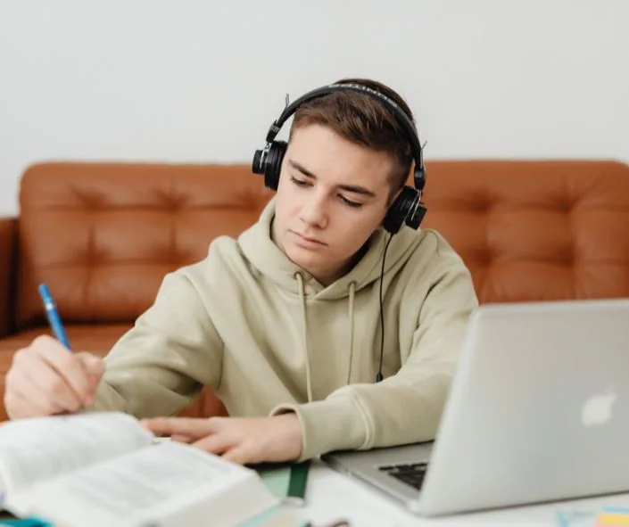

Maths tutoring
GCSE maths, numeracy, algebra, problem solving and A-Level Maths.
Explore maths tutoringOne-to-one Maths, Physics, Science and English tutoring for students in Cardiff, Swansea, Newport, Bridgend and across South Wales. WJEC-focused support, flexible online lessons and a straightforward way to book.
From £20/hr for KS3 & GCSE · From £25/hr for A-Level · No subscription

Whether you need clearer algebra explanations, help with Physics equations or structured WJEC exam revision, our tutor network can match teaching to your current course.
GCSE maths, numeracy, algebra, problem solving and A-Level Maths.
Explore maths tutoringBuild understanding of forces, electricity, energy, equations and exam questions.
Explore physics tutoringBiology, Chemistry, Physics and Combined Science for WJEC and UK boards.
Explore science tutoringReading, writing, language analysis, literature and essay technique.
Explore english tutoringFocused revision, topic repair and exam technique for Years 10 and 11.
Explore gcse tutoringSpecialist one-to-one support for AS and A-Level subjects.
Explore a-level tutoringYou don't need to know exactly which lessons you need. Start with the subject and a few details. We can discuss what is working, what isn't, and which online tutor could be a good fit.
Real people to discuss subjects, exam boards and availability.
Book from home, with no travel time or monthly subscription.
Tell us if you're studying WJEC, Eduqas, AQA, OCR, Edexcel or CAIE.
Three steps from the first enquiry to a focused lesson that responds to what the student needs.
Share your school year, exam board, topics and preferred lesson times.
We discuss your goals and check availability and pricing with our tutor network.
Meet your tutor online and work on gaps, confidence and exam technique.
The Made-for-Wales GCSE changes are being introduced in phases. The right preparation depends on the student’s year group and specific qualification, not just the subject name.
We confirm the qualification with each family. Read our WJEC tutoring guide.

We help families in major South Wales cities and towns. All teaching is online, so no journey to a tutoring centre is needed.
Cardiff, Penarth, Whitchurch and nearby
See Cardiff online tutorsSwansea, Mumbles and Gower
See Swansea online tutorsNewport, Rogerstone and surrounding areas
See Newport online tutorsBridgend, Porthcawl and Maesteg
See Bridgend online tutorsRhondda Cynon Taf, Caerphilly, Merthyr Tydfil
See The Valleys online tutorsSouth Wales Tutoring is part of the wider North Wales Tutoring Group. Here are examples of tutors in the network; matching depends on their current subject coverage and availability.
Maths & Physics tutor
GCSE and A-Level Maths and Physics
Physics & Science tutor
Physics and GCSE science support
Maths, Biology & Chemistry tutor
GCSE subjects and A-Level science
English tutor
English support at KS3, GCSE and A-Level
Pay for lessons you book. Prices below are starting rates, not a subscription, and we confirm the tutor’s hourly rate before your first session.
Online 1-to-1 tutoring
Online 1-to-1 tutoring
Quick answers about online tuition, WJEC and finding the right tutor.